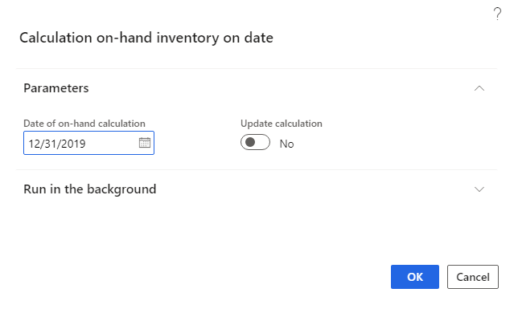
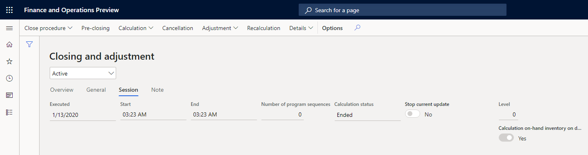
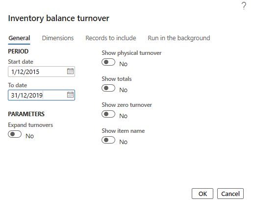
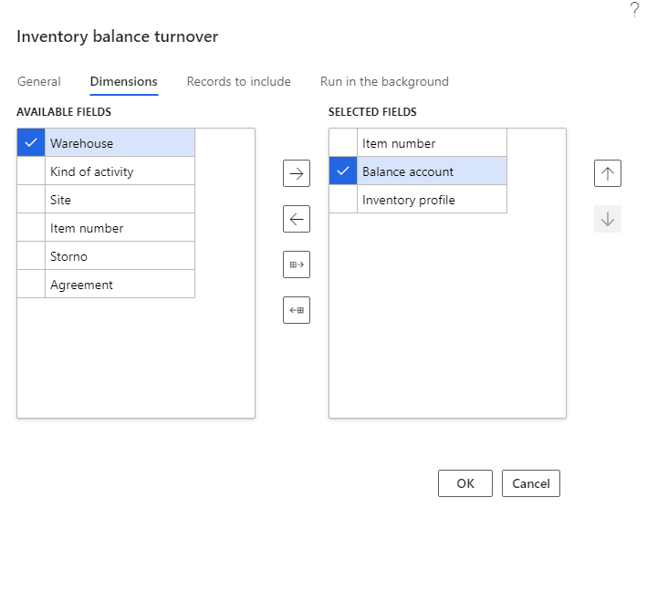
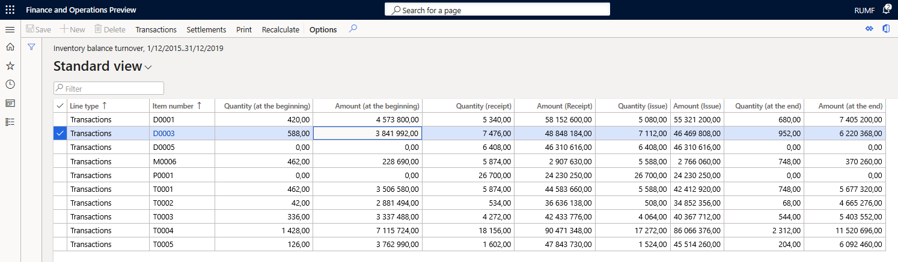
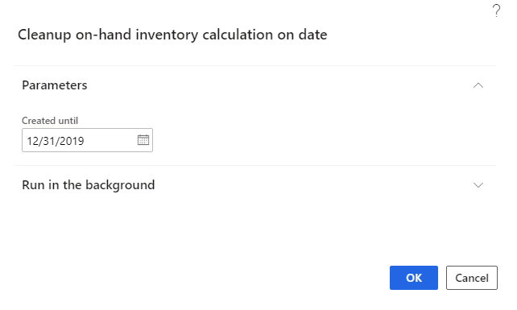
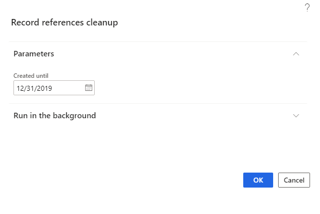
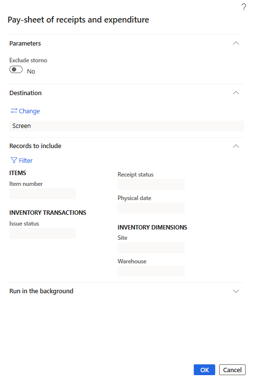
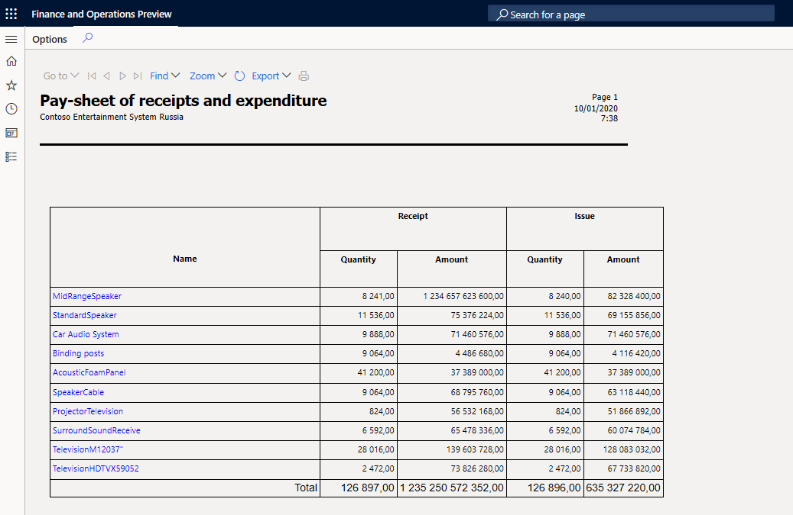
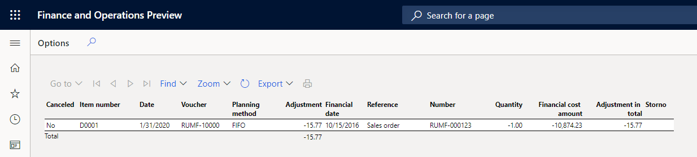

Inventory reports
There are four local inventory reports available in Russia:
- Inventory balance turnover
- Pay-sheet of receipts and reports expenditure
- Adjustments
- Adjustment (cur.)
Preliminary setup
Before you can generate the local inventory reports, complete the following steps to set up number sequences for on-hand inventory dimension combination.
- Go to Inventory management > Setup > Inventory and warehouse management parameters.
- On the Number sequences tab, select a number sequence code for the On-hand inventory on date dimension combination reference, and then assign the number sequence in the Number sequence code field.
Inventory balance turnover
Using the Inventory balance turnover inquiry, you can view balances and turnovers in the context of dimensions. You can select dimensions to include in the report, and specify the selection criteria for dimensions when you use filters.
Calculate on-hand inventory on inventory closing date
To optimize the performance of the Inventory balance turnover inquiry, use the periodic procedure, On-hand inventory on date. It calculates on-hand inventory on the date when the inventory was previously closed.
Go to Inventory management > Periodic tasks > On-hand inventory on date.
On the Calculation on-hand inventory on date page, on the Parameters tab, in the Date of on-hand calculation field, specify the inventory closing date for which the inventory calculation must be performed. By default, this is the first date the inventory was closed without an inventory calculation.
Set the Update calculation toggle to Yes if you want to clear the results of the previous inventory calculation on the specified inventory closing date and perform a full inventory calculation.

When the inventory calculation is complete, on the Closing and adjustment page, for the corresponding inventory closure line, on the Session tab, the Calculation on-hand inventory on date option will be set to Yes.

If you try to run the inventory calculation again to close an inventory that has the Calculation on-hand inventory on date option set to Yes, and the Update calculation option is set to No, an error will occur.
The results of the on-hand inventory calculation on the inventory closing date are deleted from the system when the corresponding inventory closing is canceled.
Inventory balance turnover inquiry
Go to Inventory management > Inquires and reports > Transactional reports (Russia) > Inventory balance turnover.

On the Inventory balance turnover dialog box, on the General tab, in the Start date and To date fields, specify the period of report.
Set the Expand turnovers option to Yes to divide the turnover columns into two groups in the inquiry results:
Internal turnovers that don’t change the total balances of the company. This includes inventory movements on inventory transfer journals and transfer orders.
Note
The following documents are not considered internal turnovers because the item from the warehouse can be written off:
- Quarantine orders
- Transfer order scarp
- Quality orders
External turnovers that do change the total balances of the company. This includes inventory movements on purchase or sales orders and inventory journals.
Set the Show physical turnover option to Yes to separate physical turnovers from financial turnovers. Physical turnovers include packing slips and production orders, picking lists, by-product journals and report-as-finished journals for production orders. Financial turnovers include purchase or sales invoices, inventory journals, and the calculation of production orders. The physical turnover will be allocated to a separate group of columns. If you set the Show physical turnover option to No, the physical turnover is added to the financial turnover.
Note
If you use the physical storno mechanism for inventory transactions during a financial update, the physical turnover and storno physical turnover for financially updated inventory transactions are reflected in the same column as a receipt or issue, but with opposite signs. That is, they are summarized to zero, if both the physical and financial dates of the inventory transaction are included in the inquiry period. If the physical date is included in the inquiry period, and the financial is not, the inquiry will contain only physical movement, but the reverse/storno of physical movement and financial movement will not be considered.
For example, for the following inventory transactions, the purchase and credit note for the purchase are listed.
Document type Type of inventory transaction Credit correction (physical) Quantity Purchase order Receipt No 10 Credit note for the purchase Issue Yes -3 If the Storno dimension is not selected, the report will show the line with the following quantities:
Quantity (Receipt) Quantity (Issue) 7 0 If the physical or financial update of inventory transaction wasn’t posted to the general ledger, the value in the Balance account dimension for the inventory transactions is empty.
Set the Show totals option to Yes to view lines with subtotals on dimensions.
Set the Show zero turnover option to Yes to view lines with zero turnovers (but a non-zero initial balance) for the period. This option is automatically selected if the Show totals option is selected.
Set the Show item name option to Yes to view the product name in addition to the product code.
On the Dimensions tab, select dimensions to include in the report.

The following dimensions are available:
Item number
Inventory dimensions
Kind of activity: The value Unspecified is displayed if the inventory movement does not have an Inventory profile dimension.
Balance account
Agreement
Storno allows you to separate storno transactions.
If the Storno dimension is selected, then storno inventory transactions are displayed separately in the report on separate lines. These lines have the value Yes in the Storno column. The transactions are displayed with different direction and amount sign. Storno of incoming inventory transactions are shown in the Issue column with a negative sign, and storno of outgoing inventory transactions are shown in the Receipt column with a negative sign.
If the Storno dimension is not selected, the storno inventory transactions decrease the value of the initial transaction in the corresponding columns. Storno of incoming inventory transactions have a decreased value in the Issue column, where storno of outgoing inventory transactions have a decreased value in the Receipt column.
For example, the following inventory transactions show the purchase and credit note for the purchase:
Document type Type of inventory transaction Credit correction (physical) Quantity Purchase order Receipt No 10 Credit note for the purchase Issue Yes -3 If the Storno dimension is selected, the report will show the lines with the following quantities:
Storno Quantity (Receipt) Quantity (Issue) No 10 0 Yes -3 0 On the Records to include tab, use the filter to define the transactions to include in the report.
Click OK to generate a report.

Note
In the Line type column, you can see the type of the line: Transactions or Totals
The quantity columns (Quantity (at the beginning), Quantity (at the end), Quantity (receipt), Quantity (issue)) are displayed only if the Item number is selected as one of the report dimensions. In these fields, the data are is displayed in the inventory unit of measurement for the item.
If the date of the corresponding inventory settlements falls within the inquiry period, the fields with amounts, Amount (at the beginning), Amount (Receipt), Amount (Issue), Amount (at the end) contain the financial amount of the corresponding inventory transactions in the accounting currency and the adjustments of the financial amount.
The report quantities and amounts also include inventory transactions that have been updated physically. The physical amount of the inventory transaction is used. Inventory transactions that are updated financially are included in the inquiry with the financial transaction date. Inventory transactions that are updated only physically are included in the inquiry with the physical transaction date. Inventory settlements are reflected in the report with the date of the inventory settlement.
Depending on the type of inventory transaction, the inquiry determines the direction of the inventory turnover as follows:
Type of inventory transaction Direction Purchase order Receipt Sales order Issue Production Receipt Production line Issue By-products Receipt Other types of inventory transactions Receipt for incoming transactions and Issue for outgoing transactions If the Item number dimension is selected, you can select a line with the line type, Transaction, and on the Action pane, select Transaction. On the opened Inventory transactions page, you can see the list of transactions that generated turnovers in the selected line. If the financial date does not fall within the inquiry period, but there are inventory settlements within the inquiry period, the transaction is not reflected on this page.
Select Recalculate to set new inquiry parameters and recreate the results.
Select Print to view or save the report as a Microsoft Excel document. On the Parameters FastTab, set the Print ranges to Yes if you want the report to display the filters specified in the inquiry parameters, as well as the filters applied to the inquiry results.
Clean up temporary data
When calculating data for an Inventory balance turnover inquiry, the system generates temporary data but stores the data in permanent database tables. After closing the inquiry form, the data is deleted from the system. However, temporary data may not be completely deleted (for example, in case of system failures). To clear the temporary data, the On-hand inventory calculation on date and Record references cleanup periodic operations are used.
Go to Inventory management > Periodic tasks > Clean up > On-hand inventory calculation on date.

On the Parameters FastTab, in the Created until field, specify the date. The temporary data with a creation date before the specified date will be deleted. Specify the date equal to current date minus one (1) day to avoid deleting the data currently used by another user.
Select OK.
Go to Organization administration > Periodic > Record references cleanup.

On the Parameters FastTab, in the Created until field, specify the date. All temporary data with creation date before the specified date will be deleted.
Select OK.
Pay-sheet of receipts and expenditure report
This report displays receipts and issues for all items.
Go to Inventory management > Inquires and reports > Transactional reports > Pay-sheet of receipts and reports expenditure.

On the Pay-sheet of receipts and expenditure dialog box, on the Parameters FastTab, specify the value of Exclude storno parameter:
- If the Exclude storno option is set to Yes, the system displays the storno turnovers in the total inventory movements without allocating the storno turnovers as a separate line.
- If the Exclude storno option is set to No, the system displays a line with initial transactions for each item and a line with storno transactions, if there were any. If the original and storno transactions are in the same reporting period, they do not add turnovers for the item, but if they are in different periods, the transaction that falls within the inquiry period will affect the period's turnovers.
On the Records to include FastTab, select the Filter to apply filters for the report.
Select OK to generate a report.

Adjustments report
This report shows all adjustments that were done during the inventory recalculation or closing. To do this, go to Inventory management > Inquires and reports > Transactional reports > Adjustments. Specify the parameters, and then select OK to generate a report.

Adjustments in currency report
This report shows all adjustments that were done during the inventory recalculation or closing in the reporting currency. To do this, go to Inventory management > Inquires and reports > Transactional reports > Adjustment (cur.). Specify the parameters, and select OK to generate a report.